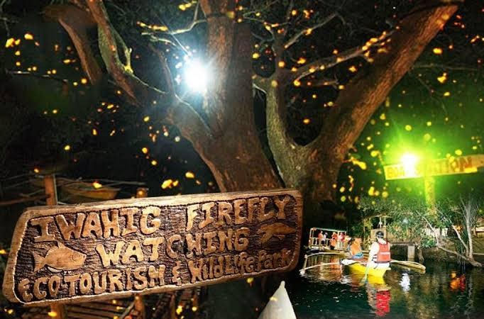

About 35 minutes south of downtown Puerto Princesa, small paddleboats slip onto the Iwahig River once the light is gone, and the mangroves begin to blink. That is all Iwahig firefly watching is: a guided night ride on a quiet river, with no engine and no spotlights, past trees where fireflies have settled for the evening.
The practical side is short. Boats go out from 6:00 PM, the published rate for booking direct is ₱600 per boat for up to three people, and packaged tours with hotel transfers and dinner cost roughly ₱1,500 to ₱2,000 per person. Dark, dry nights give the clearest view, and no one can promise the same display twice.
Residents run the boats through the Iwahig Community Ecotourism Association, so what you pay stays with the people paddling and guiding. The ride also slots in neatly after a daytime tour, since a morning at the Underground River or a day of Honda Bay island hopping is over well before sunset. Below: how the evening runs, what it costs, how to get there and how to pick your night.

Iwahig Firefly Watching at a Glance
What the River Ride Is Like
The river station sits at Km. 20 Ferry Area on the South National Highway, in Barangay Iwahig. From there the Iwahig River winds through mangroves, and the fireflies gather on the vegetation along both banks. A local boatman paddles, steers and points out the trees where the insects are thickest that night.
Everything about the ride is kept low-key on purpose. The boats are small, they carry no motor, and the only sounds are the paddle and the water. Give your eyes a few minutes to adjust and single flashes turn into clusters, until whole stretches of mangrove seem to flicker.
Nobody switches the fireflies on, though. They are wild insects, and their numbers shift with the weather, the moon and the state of the river. Some nights the trees are crowded with light and other nights the display is thinner. Go for the river and the dark, and treat a big showing as a bonus.
How the Evening Runs, Step by Step
The order changes a little with the package. Some operators serve dinner before the boat ride and others after it, so check which one you have booked.
The evening route
Puerto Princesa to the Iwahig River
Opens6:00 PMBoatPaddle, no motorSeatsUp to 3
-
Step 1
Ride south to Iwahig
Most visitors are collected from their hotel and driven south toward Barangay Iwahig. If you are making your own way, get the exact meeting point from the association before you set off.
-
Step 2
Check in and hear the briefing
Staff explain how the ride works and the rules that protect the fireflies. Pay attention to the parts about lights, noise, seating and life vests.
-
Step 3
Board a small paddleboat
Put on the life vest, sit where the boatman asks and stay seated. The boat moves slowly along the mangrove-lined river, quiet enough to hear the water.
-
Step 4
Watch the mangroves light up
Look toward the banks, not the sky. The fireflies show as single flashes or as clusters in the trees, and the guide will steer you to the busiest spots. Keep phones and flashlights off.
-
Step 5
Head back to the station and the city
Follow the boatman when getting off, then return to the waiting area or your vehicle. Dinner, if it is part of your package, may come now instead of earlier.
Plan for the whole evening. Time on the water is only one part of it. With transfers, check-in, waiting and dinner, a packaged tour takes around three to four hours.
Best Time to Go: Moon, Weather and Season
The fireflies are easiest to see on a dry, calm evening with little moonlight. If you can move your booking by a day or two, these three things are worth checking first.
Moon
Book close to the new moon
A darker sky makes each flash stand out against the trees. A bright moon does not chase the fireflies away, but it flattens the contrast, so check a lunar calendar before you pick a date.
Weather
Pick a dry, still evening
Rain and strong wind affect both the boats and the insects. Heavy rain or an unsafe river can cancel the trip, so ask the operator whether a rained-out booking can move to another night.
Season
Drier months are simpler
Tours run through the year. The dry months are easier for outdoor plans and the wet months bring more cancellations. No month guarantees a strong display, so keep one spare evening if the fireflies matter to you.
How Much Iwahig Firefly Watching Costs
What you spend depends on whether you deal with the association yourself or buy a package that bundles the ride with transport, a guide and dinner.
Three people sharing one boat pay ₱200 each for the ride itself, which is why going direct is far cheaper once the transport is sorted. Packages cost more because the van, the guide and the meal are folded in.
Two advertised prices only compare fairly when you know what each covers. Before paying, ask whether the boat ride, hotel pickup and drop-off, and any environmental or community fees are included. Ask if dinner is a set meal or a buffet and whether drinks come with it, if the booking is private or shared, and what happens to your money when rain cancels the trip.
Getting to Iwahig from Puerto Princesa
Iwahig is reached by road, south of the city centre. Allow more than the usual 35 minutes if your hotel is far from downtown or you are leaving at rush hour. The river station is well outside the hotel and restaurant district, so the ride back is the part to settle before you leave.
Easiest
Join a tour with transfers
Hotel pickup and drop-off are handled for you, which matters late in the evening when public transport is thin. Hotels outside the operator's usual area may pay extra or meet elsewhere.
Independent
Private car or hired driver
Agree on the return time before the boat ride, and ask whether waiting time is part of the fare. Use the meeting point in your booking confirmation over a general map pin.
Groups
Hire a van together
The ₱1,500 air-conditioned van seats up to 10, so a full group pays about ₱150 each for the road trip on top of the boats.
Book Direct or Join a Tour?
Best if you have your own ride
- You already have reliable transport there and back
- You want to ask about boats and community fees yourself
- You are happy to sort out dinner separately
Best for a short stay
- Hotel pickup and drop-off are included
- No late-evening ride to arrange on your own
- Dinner is often part of the package
To book direct, contact the Iwahig Community Ecotourism Association at (048) 717-8035 or 0908 562 0040. Numbers and arrangements change, so confirm them a few days before your trip. With a travel agency or an online platform, read the inclusions and the cancellation terms, then confirm the pickup time and whether your hotel is covered.
What to Bring
- Insect repellentPut it on before boarding, and ask the operator if any products are restricted near the river.
- Light clothesThe evening is warm and humid, even on the water.
- Easy footwearShoes or sandals you can manage around the river station and when stepping into the boat.
- A little cashFor drinks, tips and anything your package leaves out.
- A light rain jacketHandy in the wet months, although unsafe weather will postpone the ride anyway.
- Your booking details, saved offlinePickup time and the operator's number, in case the signal drops.
Leave big bags and valuables at the hotel. A phone is fine as long as the screen is dimmed and the flashlight stays off.
River Rules That Protect the Fireflies
Keep the river dark and quiet
- No flash, no beamsFlash photography, phone lights and flashlights pointed at the trees wash out the display and disturb the insects.
- Look, don't touchDo not catch or collect fireflies, or reach into the mangroves.
- Nothing goes in the riverTake food wrappers and plastic back with you.
- Stay seated, vest onKeep the life vest fastened and follow the boatman when boarding and getting off.
- Keep voices lowThe quiet is half the experience, for your boat and the ones behind it.
Photos are harder than they look. Cameras struggle in near darkness, and a ride spent fiddling with settings is a ride mostly missed. If you want to try, ask the guide what is allowed before the boat reaches the viewing area.
Children, Small Boats and the Dark
Nothing here is physically demanding, which suits families with older children. The catch is the setting: a small boat on a dark river, where everyone has to stay seated and follow instructions. Before booking with kids, ask about minimum ages, infant rules, boat capacity and life-vest sizes, since not every boat or shared tour can take babies or toddlers. A private arrangement gives more room to adjust.
Anyone uneasy in the dark, nervous on small boats or prone to bad reactions from insect bites should think it over first.
Where It Fits in a Puerto Princesa Trip
Give the fireflies their own evening. Tacked onto the end of a long tour day, a slow river ride mostly makes people sleepy. And skip the airport-to-tour dash on arrival day unless you land early, because a late flight or a slow check-in can cost you the booking.
- Day 1Arrive, then Iwahig
Check in, keep the afternoon light and ride out to the river after dark.
- Day 2Underground River
A full-day tour, or a slower day around the city if permits are tight.
- Day 3Honda Bay or onward
Island hopping in the bay, or the road north to the rest of Palawan.
Shuffle the days around your flights and the forecast. If Puerto Princesa is one stop on a longer route, the Palawan itinerary for 5, 7 or 10 days shows where a free evening usually falls.
Is It Worth an Evening?
Yes, if a slow hour on a dark river sounds like your kind of night. Iwahig has no rides, no stage and few facilities. What it has is the river, the mangroves and guides who know which trees are busy.
Go in with honest expectations. The time on the water is short, the display changes from one night to the next, and a bright moon or a wet week can mute it. Travellers who want a guaranteed spectacle may come away flat. Those who like wildlife on its own terms usually count it among the better evenings of a Puerto Princesa stay.
Quick Answers
Can you see fireflies every night?
No. Sightings depend on weather, moonlight and the river, so no operator can promise them. Dark, dry evenings are your best bet.
Is a full moon bad for firefly watching?
It makes the flashes harder to pick out against the trees. You will likely still see fireflies, only with less contrast than on a moonless night.
Is dinner included?
Only in some packages. Direct boat bookings cover the ride alone, so ask about the menu and drinks before paying for a tour.
How long is the whole trip?
A packaged evening runs about three to four hours from pickup to drop-off. Confirm the expected return time when you book.


Comments
No comments yet. Been here recently? Share a tip or ask a question.
Leave a Reply